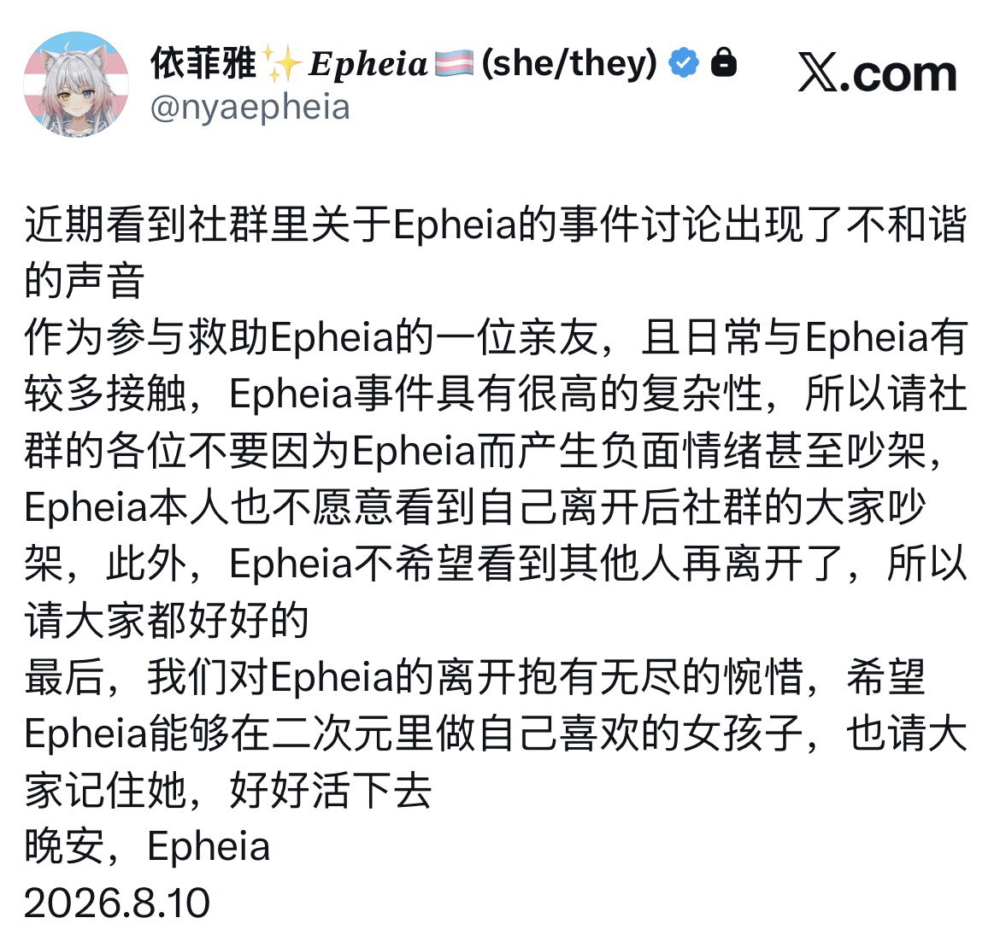

这件事情到现在了其实没什么再讨论甚至是争吵的必要了，或许现在真的是一个好结局…至少对Epheia来说是这样的…
我们是人，不是神，没有能力改变已经发生的事情，既然结果已经是这样了，就不要让坏心情一再扩散了，继续去想，除了让自己难受，大概也没有什么意义了吧…
事实上，所有能看到的事情都是冰山一角，必然仍有大量永远埋藏在水面下的部分，就连我都不敢说真的完完全全了解整件事，所以拿现有公开更少的信息去评价本身就是片面的，主观的，造成了更多的争议
以及，图示帖子不是我发的。也不要再问我到底发生了什么，一是我不想再去回忆；二是我知道的东西也不够全面，一部分也是推理出来的，我相信也没有人，包括两位当事人，能够完整描述；三是应警方要求我也不能公开具体的细节。更不要再问我后续发生了什么，我不知道，真不知道，在我离开合肥的时候，我就再没有任何信息更新了，甚至Epheia妈妈已经把我微信拉黑了…
好了，就这样，我最近状态也不是很好，如果有说的不合适的地方，还请多担待
我们是人，不是神，没有能力改变已经发生的事情，既然结果已经是这样了，就不要让坏心情一再扩散了，继续去想，除了让自己难受，大概也没有什么意义了吧…
事实上，所有能看到的事情都是冰山一角，必然仍有大量永远埋藏在水面下的部分，就连我都不敢说真的完完全全了解整件事，所以拿现有公开更少的信息去评价本身就是片面的，主观的，造成了更多的争议
以及，图示帖子不是我发的。也不要再问我到底发生了什么，一是我不想再去回忆；二是我知道的东西也不够全面，一部分也是推理出来的，我相信也没有人，包括两位当事人，能够完整描述；三是应警方要求我也不能公开具体的细节。更不要再问我后续发生了什么，我不知道，真不知道，在我离开合肥的时候，我就再没有任何信息更新了，甚至Epheia妈妈已经把我微信拉黑了…
好了，就这样，我最近状态也不是很好，如果有说的不合适的地方，还请多担待
